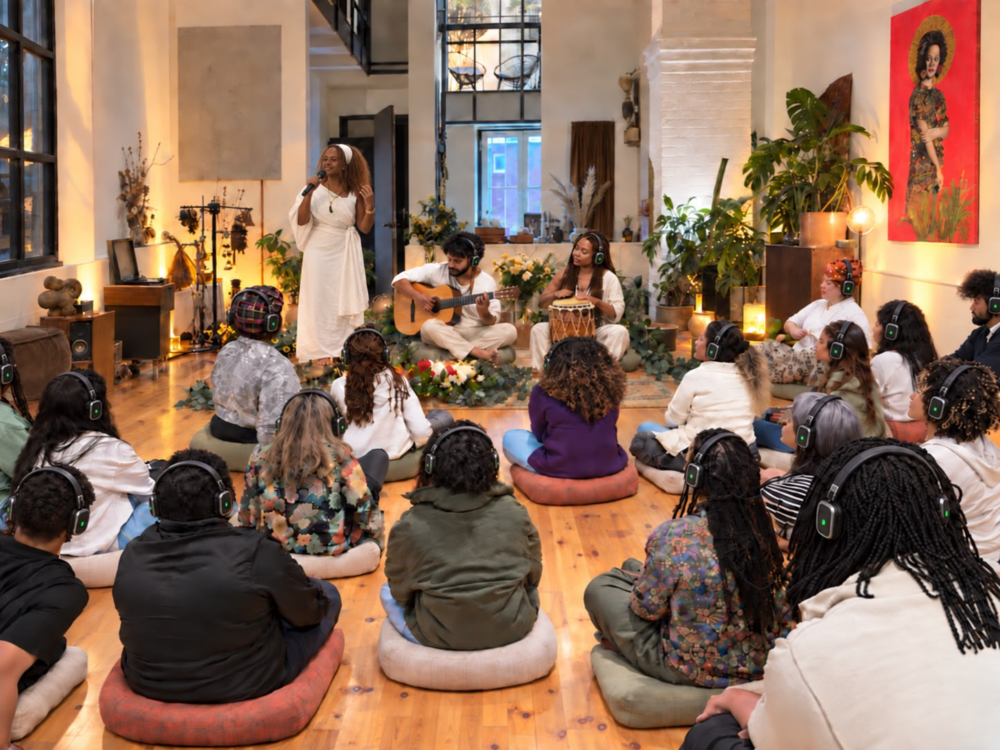
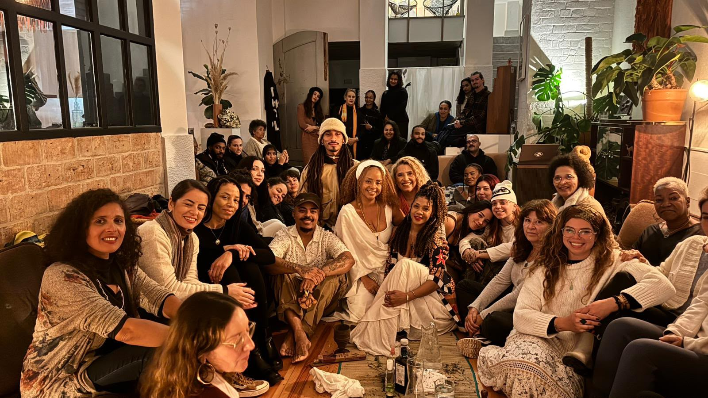
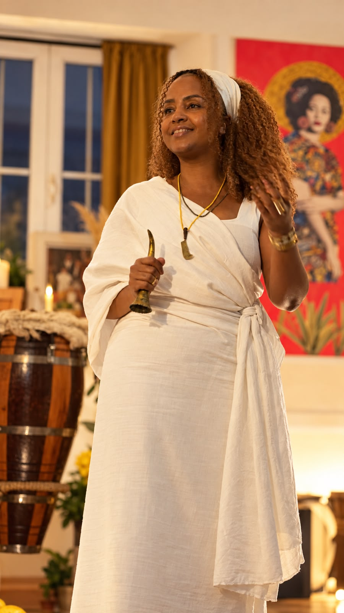

Música ao vivo
Voz, violão, percussão acústica e sintetizadores constroem os arranjos no palco, com pausas e respirações pensadas para a escuta próxima.
música • palavra • fones sem fio
Silent Concert é um concerto ao vivo acompanhado por fones sem fio. Voz, violão, percussão e histórias conduzem uma apresentação próxima, em que cada pessoa ouve individualmente e participa no mesmo espaço.
apresentação ao vivo
Cada pessoa recebe um fone sem fio no início do concerto. No palco, Yèyé Osunsade conduz a voz, as canções e as palavras, enquanto Japa System constrói a base rítmica com percussão orgânica e eletrônica da Nave System. O som não ecoa pelo ambiente: ele chega direto ao ouvido de quem está presente.


Voz, violão, percussão acústica e sintetizadores constroem os arranjos no palco, com pausas e respirações pensadas para a escuta próxima.
Cantos e poemas de matriz yorùbá e nagô formam a narrativa da apresentação, integrados diretamente às melodias.
Todos acompanham a mesma execução sonora em sincronia, com a nitidez de um estúdio e o calor de um show ao vivo.
opções de apresentação
Cantos e poemas tradicionais yorùbá dedicados ao cuidado com o ori (a cabeça). O repertório aborda equilíbrio interior, foco e bem-estar mental.
Ver o formato Ori do Mundo ↗Cantos e poemas tradicionais nagôs e yorùbás inspirados nas águas de Òṣun. O repertório trata de autoconhecimento e da relação com rios, cachoeiras, lagoas e oceanos.
Ver o formato Oxum Passou por Aqui ↗fones de ouvido sem fio
Os fones sem fio isolam ruídos externos e entregam cada detalhe instrumental com fidelidade. O público permanece reunido no mesmo local, acompanhando a dinâmica das vozes e dos tambores com total nitidez.
A voz, as batidas e os silêncios chegam limpos, sem reverberações excessivas do ambiente.
Sem interferências sonoras paralelas, a atenção permanece na música e na palavra do início ao fim.
O sinal de áudio é transmitido em tempo real para todos os fones simultaneamente.
Silent Concert se adapta a festivais, museus, centros culturais, teatros, retiros e encontros educativos ou corporativos. A infraestrutura é compacta e silenciosa para o entorno.
Áreas internas ou ao ar livre que comportem o público sentado ou em pé, sem exigir isolamento acústico na sala.
Central transmissora sem fio, fones individuais higienizados, microfones, violão e setup de percussão.
Apresentações de 50 a 80 minutos, com capacidade adaptável de 30 a centenas de fones conforme a demanda.
artistas e criadores

programação e contratação
Para receber a apresentação em seu festival, instituição, centro cultural ou evento, entre em contato informando local pretendido, data e estimativa de público. Retornamos com as especificações técnicas e opções de montagem.
Conversar sobre a programação ↗